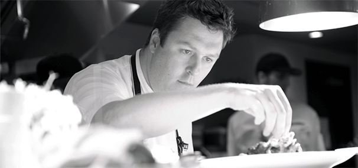
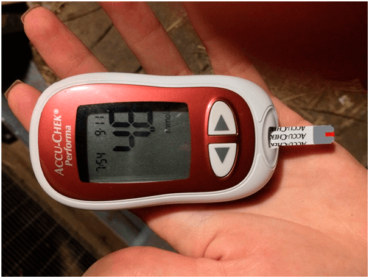

BYZNYS na NEMOCI:
Zjistíte o CUKROVCE vše, co se skrývalo
dlouha léta
Kategorie:Užitečné články pro diabetika Zvěřejněno:

Ahoj! Jsem Ondřej Svoboda.
Nikdy jsem nepsal recenze, ale rozhodl jsem se to udělat pro ty, jako jsem já, nemocných cukrovkou. Protože kvůli chybě doktoru jsem malem nepřišel o život.
Je mi 35 let, mám manželku a 2 děti. Pracuji jako kuchař ve školní jídelně. 10 let zpátky mi diagnostikovali – cukrovka 2. typu. Stálé jsem se cítil unaveně, nemohl jsem normálně jíst, nutil jsem sebe jíst pouze postní jídlo. S moji práci! Navíc musel jsem stálé kontrolovat hladinu cukru v krvi.

Můj den začínal s píchnutí do prstu a měření cukru. Utrácel jsem na léky tisíce eur měsíčně. Tohle s výplatou kuchaře! Katastrofa! Ještě I CENY na tablety v Česku vyrostly o hodně

Musel jsem prodat chatu a auto, vzít si půjčku a kupovat testovací pásky…. Malem jsem se nedostal do hrobu, když jsem to všechno používal. Furt se mi chtělo zvracet , a za pár měsíců jsem hodně přibral. Navíc jsem byl obtíži pro rodinu. Žil jsem s obavou, že I děti dostanou cukrovku 2. typu.
Myslel jsem, že nemůže být hůř, dokud jeden případ mi malém nevzal život.
Koupil jsem si nové boty a abych je rozchodil, dostal jsem mozole. Za nějakou dobu se to změnilo do nezahojujících rán. Necítil jsem bolest, ale bylo mi špatně chodit, začaly svědit chodidla , pak jsem šel k doktorovi. Řekl, že je velká šance vzniku gangrény, a to znamená jediné – můžu PŘIJÍT O NOHU!!!

Od toho co jsem uslyšel, jsem se vzpotil. Věděl jsem, že je gangréna – často u diabetiků, ale nemyslel jsem, že se s tím setkám. Jak budu žít a pracovat bez nohy!? Od doktora jsem odešel s hrůzou a obavou za svůj život...a seznamem léků na desítky tisíce korun.
Večer jsem hned zavolal na skypu bývalýmu spolužákovi,který žije v Americe. Když ten slyšel moji bídu, že mám problémy se zdravím a nemám peníze na léky. Tak mi pověděl o tom, co se děje v Americe na trhu s léky, stejná situace. Jejich doktory také doporučuji kupovat drahé léky, které naopak zhoršují zdraví. Vždyť ČÍM JE VÍCE NEMOCNÝCH LIDÍ, tím VÍCE JE POTŘEBA TABLET. A z jejich prodeje jde obrovský výdělek farmaceutickým firmám . Myslím, že I Česko není vyjímkou, prostě o tomhle všem se neříká.

Zeptal jsem se kamaráda, zda ví, jak v Americe se léčí cukrovka, tak mi řekl, že teď už nepoužívají obyčejné léky,ale přírodní doplňky . Jejich účinek je několiknásobně vyšší a neškodí zdraví na rozdíl od tablet. Skoro všechny známé léky proti cukrovce vyměnil speciální přípravek - «» . U nás v Česku jsem o takovém ani neslyšel, proto jsem poprosil poslat odkaz na tento výrobek.
Zjistil jsem to,že"" je přírodní přípravek ve formě prášku. Jeho důležitou složkou – inzulin z rostliny Heliánthus tuberósus . Několik století se používalo ve východní medicíně pro normalizaci hladiny cukru v krvi. Po několika testování moderní věda dokázala efektivitu tohoto polysacharidu v boji proti cukrovce 2.typu. A co je důležité – inzulin v kombinaci s L-argininem pomáhá obnovit buňky pankreasu, produkující inzulin!

”” - je jediný doplněk na základě tohoto extraktu. Při cukrovce 2.typu snižuje hladinu glukózy v krvi , zmenšuje nebo úplně odstraňuje (více než 20% nemocných) potřebu v lécích pro snížení hladinu cukru, zpevňuje cévy a reguluje proces výměny.
"" se doporučuje používat dohromady s léčební terapii , tak I
jako PREVENCE, pokud je šance vzniku nemoci.
Rozhodl jsem se zkusit””, vždyť tehdy jsem neměl o co přijít, a objednal jsem si
ho přímo z webu výrobce.
Vlastně, od rána jsem nalil teplou vodu, pak jsem rozpustil čajovou lžičku prášku a pil malými douškami. Upřímně řeknu, nevěřil jsem na zázrak. Ale zbytečně.… Po uplynutí týdne, všimnul jsem si, že nejsem tak unavený, časem jsem začal jíst oblíbené jídlo . Hladina cukru v krvi se normalizovala (před použitím «» hladina glukózy v krvi nalačno byla 9,6 , po dvou týdnech na plný žaludek – 5,4 ) a rány na noze se zahojily. Už ani neříkám o vaze .Shodil jsem 4,5 kg!
br>Nemohl jsem si uvěřit výsledkům.. Tady je řešení problému pro nemocné cukrovkou 2.typu. Zmizela bolest a píchání, obavy ohledně toho,co jím . Nestresuji se kvůli operaci a injekcím. Už NEMUSÍM KUPOVAT SPOUSTU LÉKŮ.Zvítězil jsem nad cukrovkou bez výrobku podvodných farmaceutických firem a doporučení tzv . «expertů».
Hned se zmíním, “” se prodává pouze na internetu, protože výrobce nepouští zboží na trh a snaží se zmenšit objem prodeje. Pamatujte si, že farmaceutické společnosti nekoukají na vás jako na pacienta,kterého lze vyléčit. Vidí Vás jako klienta do konce života.
“” ŠETŘÍ VAŠE stovky tisíc, které byste museli utratit za spousta léků farmaceutickým společnostem. Buďte opatrni, do Česka se občas dostavají padělky. Objednávejte u JEDINÉHO oficiálního distributora v ČR, ten garantuje kvalitu.

Doufám, že můj příběh bude pro vás užitečný a zachrání ne jeden život. Buďte zdravými!
Komentáře:
Tady těm v bílých pláštěnkách jen řezat! Známý doktor doporučil tento přípravek pro PREVENCI. «» říkají ,že je teď nejlepší přípravek proti cukrovce. Dívejte se, říkám za sebe, že předtím než jsem užíval hladina glukózy na prázdný žaludek byla 8.7, za měsíc – 5.9 PO JÍDLE! Pokračuji používat.
Děkuji vám, že jste napsal. My jsme s manželem už neměli naděje...Přečetla jsme si a objednala z tohoto webu. Za pár týdnu šel na odběry- z 7.9 inzulin je teď 4.8!!!
Také chci napsat,myslel jsem,že je to zase podvod, dokud jsem se sám neujistil. Používal jsem měsíc. Před léčením jsem měl inzulin na prázdný žaludek 9,8, za měsíc na plný žaludek-5.9. Žiju na zdraví!
Dobrý den, jmenuji se Eva. Nejsem nakažená cukrovkou. Ale můj otec je diabetik 2.typu už 15 let. Poraďte, jak mám s tím bojovat? Moc mám ráda otce a přeji mu dlouholetí, ale nevím, co když… Poraďte ,jak mu mám pomoct, budu moc vděčná
Zkuste mu před jídlem dát sklenici teplé vody s « ». Neznamená to,že musíte přestat brát obyčejné léky,ale snížit hladinu cukru určitě pomůže!
Můj táta má stejný problém, ale inzulin nebere, jen tablety. Začal poslouchat mámu, držet dietu a používat tenhle přípravek, až když přestal cítit prst na noze…
Hospodárný přípravek! Byli jsme zadluženi, bylo moc drahé léčení pro syna. V práci známá doporučila, prý,zkuste “”. Nevěřila jsem, že to něco změní, ale zkusila jsem to. Syn je teď zdravý. Představte si z 9,7 inzulina na 5.9!
Také jsem měla 2.typ cukrovky, byla jsem obtíži pro rodinu. Sestra-doktor našla tenhle web, kde podrobně popisují účinek “” a jeho pozitivní efekt. Hned jsme si objednali tenhle doplněk, který mě vrátil k normálnímu životu!
Můj bratr se trápil cukrovkou 2.typu. Jsem byla zoufalá, ale objednala jsem si to. Poslední naděje se stala skutečnosti! Glukóza za 2 hodiny po jídle byla 9,8, a za týden používání NALAČNO ŽALUDEK se stala 5,3! Tohle je odkaz, kde jsem si objednavala “”.
Pracuji jako doktor v soukromé klinice. Nabízeli mi ,abych prodávala pacientům léky za %, ale jak je to možný...Moje máma byla nemocná cukrovkou 2.typu, dokud jsem nenašla ten správný lék. Výsledky jsou takové: před použitím «» glukóza na prázdný žaludek - 8.7. Po 3 měsících použití - 5.9. Před použitím glukóza v krvi za 2 hodiny po jídle - 9.8, a za 3 měsíce , 2 hodiny po jídle- 5.2. Myslím si, že brzy už nebudeme vůbec brát léky.
Doktoři-svině!!! Jak dlouho ještě budou předepisovat nejdražší tablety, když jsou levnější analogy!?
Kde jste byl dřív se svým článkem...Jsem nemocná cukrovkou … :(
Nebuďte smutná! Mně «» pomáhá. Ověřila jsem si to! Berte tenhle doplněk ráno s základními léky pro prevenci a bude se cítit lépe.
A jak se Váš “” používá?
Já jsem nalévala teplou vodu, ředila ji, aby byla teplá , a pak jsem dávala čajovou lžičku “”, rozmíchala jsem to, a vypila ráno nalačno. Snadné :)
A já jsem místo čaje ráno pila tento přípravek)) Snižuje hladinu inzulinu. Měla jsem 3 týdny zpátky ráno 7, 6 , a teď jsem naměřila - 5,2. Takže tak))
Kdo jste používal “”, řekněte mi, co je ve složení?
Objednal jsem si pro sebe, na balení ve složení je: fibregam, inulin, kyselina citronová, vitamín B1, B6. Myslím, že je všechno užitečné, určitě to neuškodí.
Je super, že existuje taková metoda! Nikdy jsem nechápala, proc kupovat léky za dráho, když jsou levnější přípravky. Jdu do důchodu, moc nemůžu utrácet v lékárnách, proto, ano, lépe tyto stvoření v pláštěnkách neposlouchat, ale myslet svoji hlavou.
Ukázal jsem kamarádovi – doktorovi “”, ten si to přečetl a byl překvapen, že u nás v Česku se prodávají takové věci! Říká, že všechny tyto složky jsou opravdu ve prospěch zdraví a snižují hladinu inzulinu v krvi. Pro diabetika tenhle jediný přípravek vymění zcela všechny ostatní léky.
Oh, Ondřej, napište prosím o svých výsledcích
Používal jsem 2 týdny. Z 7.1 se snížil do 4,8. Určitě musím pokračovat!!!
P.S. Je pro mě moc důležité, co si myslíte o "". Pokud jste si to zkoušeli, tak se podělte o své dojmy do komentářů dole: